DALE CARNEGIE · HOW TO WIN FRIENDS · FRONT MATTER · PDF p11–23
Preface, How This Book Was Written—and Why, and Nine Suggestions on How to Get the Most Out of It
Why a speaking teacher ended up writing the world's best-known people-skills handbook, how it was tested on real adults for fifteen years, and nine habits for turning it from a book you read into a skill you use.
The front matter has three short pieces by two authors. Dorothy Carnegie, Dale's widow, explains in 1981 why the book was lightly revised. Dale Carnegie, writing in 1936, explains why he wrote it: the adults in his evening classes needed people skills even more than speaking skills, and no practical textbook existed, so he and a researcher combed history and biography and then tested every rule on thousands of students. Then come his nine suggestions for reading it, which add up to one idea: this is an action book, and you only keep what you practise. For an engineer, it reads like a product story (a postcard-sized MVP iterated for fifteen years) and a study plan (read twice, mark it, review monthly, run a weekly retro on yourself).
Preface · Dorothy Carnegie, 1981 · pdf p11–12How This Book Was Written · Dale Carnegie, 1936 · pdf p13–18Nine Suggestions · Dale Carnegie · pdf p19–23
No principle here. Instead: the nine suggestions, in short
Want it badly: a deep, driving desire to get better with people.
Read each chapter twice: fast for the overview, then slowly.
Pause often and ask how and when you will use each idea.
Mark the book: underline what you can use.
Review it every month.
Apply it at every chance and use it as a handbook for real problems.
Make it a game: pay someone a small fine each time they catch you breaking a rule.
Check your progress weekly: mistakes, what went right, lessons.
Keep a record of when and how you used each principle, with results.
How the chapter fits together
pdf p11–23 · read this first
Who is speaking. When this page says "the preface" or "we", it means Dorothy Carnegie and the 1981 editors. Everything from "How This Book Was Written" onward is Dale Carnegie himself, in 1936, writing in the first person ("I have, since 1912, been conducting courses…").
Where it sits. This is everything before Part One. After it the book has four Parts: Part One, Fundamental Techniques in Handling People (ch01–ch03); Part Two, Six Ways to Make People Like You (ch04–ch09); Part Three, How to Win People to Your Way of Thinking (ch10–ch21); and Part Four, Be a Leader (ch22–ch30). The appendix (ch31) is Lowell Thomas's portrait of Carnegie. Carnegie sets himself a test here: if the first three chapters (all of Part One) do not leave you better able to handle real situations, he counts the book a failure for you.
The argument as a chain. Each row leads to the next.
Preface5,000 copies planned→all-time best-seller→lightly revised in 1981, voice kept
Problemadults need people skillseven engineers: "15% technical, 85% people"→no course, no textbook
DemandMeriden survey: health 1st, people 2nd→"the book they need has never been written"
Researchlibraries · biographies · interviews→a short talk
Testingstudents try it and report back→postcard → card → leaflet → booklets→this book, after 15 years
Claims314 enemies into friendspromotions · sales · happier homes→testimonials, not trials
Purposewe use a fraction of our powers (James)→"an action book"
How to usewant itread twice · pause · markreview monthlyapply · game · weekly review · record→habits, not information
01 · PREFACE TO THE REVISED EDITION
Dorothy Carnegie, 1981: why touch a book that never stopped selling?
pdf p11–12
The preface is short and written by Dale Carnegie's widow, Dorothy, for the 1981 revision. It does three things: tells the book's history, asks why anyone would revise a success, and promises the revision changed very little.
first printing 1937: 5,000 copiesCarnegie died 1955revised 1981translated into almost every written language
The surprise hit. Nobody, neither Carnegie nor his publishers Simon and Schuster, expected more than that modest first printing of five thousand. Instead it became an overnight sensation; printing after printing was needed to keep up, and it settled in as one of the best-selling books of all time. Dorothy Carnegie's point is that this was not a fad of the years after the Great Depression: it was still selling steadily in the 1980s, almost fifty years on, because it met a real human need.
A phrase in the language. Carnegie liked to say it was easier to make a million dollars than to add a phrase to the English language. The book's title did it: people quote it, twist it, joke about it, and it turns up in political cartoons and novels. Each new generation finds the book again and finds it still useful.
So why revise it? Three reasons:
Carnegie revised constantly himself. The book was written as the textbook for his courses in Effective Speaking and Human Relations (and was still used in them in 1981). Until he died in 1955 he kept reworking the course for a changing public, and he updated his public-speaking book several times. Had he lived, his widow says, he would have updated this one too.
Many names had faded. Famous people of the 1930s meant nothing to readers fifty years later.
Some examples and phrases had aged badly, sounding as quaint as a Victorian novel, and that weakened the message.
What the revision did, and did not do. The aim was to make the book clearer and stronger for a modern reader without changing the content: a few cuts and a few newer examples. Carnegie's brash, breezy voice was kept on purpose, 1930s slang and all, because he wrote the way he talked: enthusiastic, chatty, conversational. She ends by offering the revision to the thousands still taking Carnegie courses and reading the book, describing it as honing and polishing a well-made tool.
"Easier to make a million dollars than to put a phrase into" the language.Dale Carnegie's saying, as reported in the preface (pdf p11)
Dated, even after the revision. The 1981 update is itself now over forty years old. Many "contemporary" examples (Wall Street banks, gas companies, dimes) are dated again. This page keeps the book's facts and adds a modern or Indian equivalent where the original would confuse.
Picture it
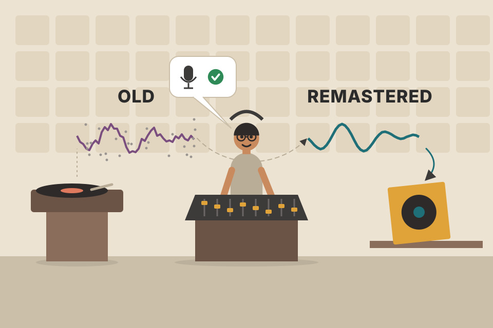
A much-loved old Hindi film song gets a remastered release. The engineers clean up the hiss, fix the levels and maybe trim a long instrumental, but nobody re-sings it or changes the tune, because the singer's voice is the whole point. That is what Dorothy Carnegie says the 1981 edition is: remastered, not re-recorded.
Where it breaks: a song does not lose meaning when its references age. A people-skills book does: an example about a 1930s celebrity teaches nothing if you have never heard of them, which is why some examples were swapped out, something you would never do to a song.
What's happening behind it
From the preface: the book lasted because it answered a permanent need (getting along with people), not a passing one, and because it was a working course text that its author kept improving, not a one-off essay.
Beyond the book: the book is often criticised as dated or as a manual for manipulation (we come back to that in "Where it can go wrong"). Reading the preface helps: from the start it was a course textbook for adults practising in class, so its stories are examples for exercises, not proofs.
At work
The preface is a nice small lesson in maintaining a legacy system: keep the interface and the "voice" users love, replace the parts that no longer make sense, and say plainly what you did and did not change. A release note of the form "we have not changed X, except to remove A and add B" is exactly what Dorothy Carnegie wrote.
Interview angle. "Tell me about a time you inherited something you didn't build." A good answer, like this preface, respects what already works, names what had aged, and explains a minimal, deliberate change.
Most books fail, so why write one more? Because his students needed it, and so did he
pdf p13
Carnegie opens by arguing against himself. Publishing is a graveyard: in the first thirty-five years of the twentieth century American publishers put out more than 200,000 different books ("a fifth of a million"), most of them dull and many of them money-losers. The head of one of the world's biggest publishing houses told him that after seventy-five years in business his firm still lost money on seven books out of every eight. So why write another one, and why should you read it? He promises to answer both questions.
courses since 1912New Yorkbusiness and professional adultsstarted as public speaking only
Where it started. From 1912 Carnegie ran evening courses in New York for working adults. At first they were public speaking only: learning, by actually doing it, to think on your feet and speak clearly, effectively and calmly, both in a business meeting and in front of a group.
What he noticed. Over the years he saw that these adults needed help with speaking, but needed even more help with getting along with people in everyday work and social life.
The confession. He also saw that he needed it himself. Looking back, he was dismayed at how often he had handled people clumsily, and wished someone had handed him a book like this twenty years earlier.
His big claim: dealing with people is probably the biggest problem you face, especially in business, but just as much at home or in a technical job (his list is "a housewife, architect or engineer").
Dated wording. "Business and professional men and women" and "housewife" are 1930s categories. Today: anyone who works with other people, at an office, a startup, a hospital, a family business, or at home.
Picture it
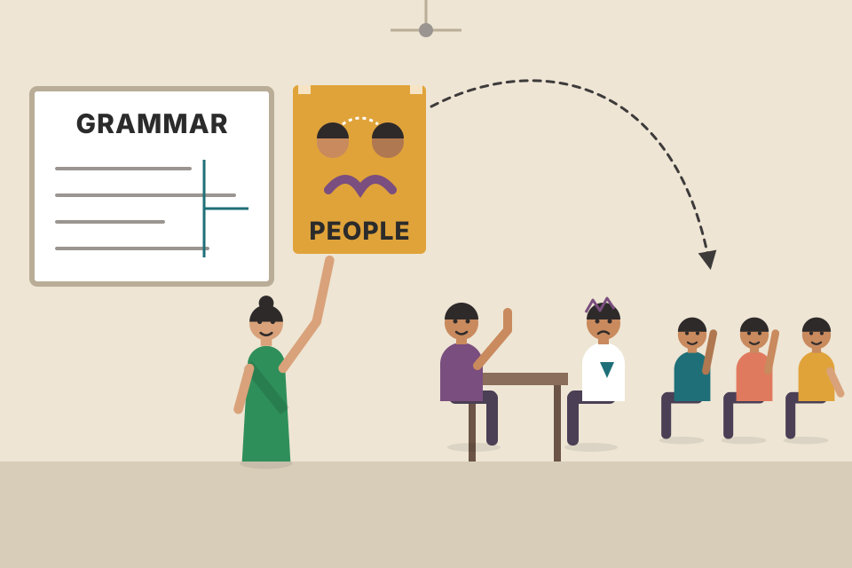
A spoken-English coaching centre in Chennai starts with grammar and pronunciation. After a few batches the teacher notices that students' real trouble is not the words but the room: they freeze when a manager interrupts, argue with interviewers, or sound rude without meaning to. So the teacher adds a module on handling people, and soon it is the most popular module of all.
Where it breaks: Carnegie did not just add a module. He found that the new subject was big enough to need fifteen years of testing and a whole book, and he admitted he was one of the people who needed it most, which coaching centres rarely say about themselves.
What's happening behind it
From the book: Carnegie's reason for writing is need he observed in a classroom, not a theory. That is why the rest of the front matter keeps returning to what students did and what happened.
Beyond the book: admitting "I needed this too" is an early example of a move he later turns into a principle: talking about your own mistakes before correcting anyone else makes the advice easier to hear.
At work
Many engineers discover the same thing a few years in: the hard part of a project is rarely the code; it is agreeing on scope, getting a review done, unblocking another team, telling a client "no". If you notice that, you are in Carnegie's 1912 classroom.
"15 percent technical, 85 percent people": Carnegie's pitch to engineers
pdf p13–14
This is the passage in the book most aimed at someone like you. Carnegie cites research done under the Carnegie Foundation for the Advancement of Teaching (no relation to him), later backed, he says, by studies at the Carnegie Institute of Technology. Its finding, as he reports it: even in a technical field such as engineering, about 15 percent of a person's financial success comes from technical knowledge and about 85 percent from "human engineering": personality and the ability to lead people.
Teal: technical knowledge (15%). Amber: skill with people (85%), as Carnegie reports the research.
His own engineering students. For years he taught each season at the Engineers' Club of Philadelphia and for the New York chapter of the American Institute of Electrical Engineers. Probably more than 1,500 engineers took his classes.
Why they came. Experience had shown them that the best-paid engineers were often not the ones who knew the most engineering.
The market logic. Pure technical skill, in engineering, accounting, architecture or any profession, can be hired at ordinary salaries. The person who has the technical skill plus the ability to explain ideas, take the lead and make people enthusiastic is the one who earns more.
Rockefeller agreed. John D. Rockefeller, at the height of his career, said the ability to deal with people can be bought like any other commodity, and that he would pay more for it than for any other ability.
"As purchasable a commodity as sugar or coffee."John D. Rockefeller on the ability to deal with people, quoted by Carnegie (pdf p14)
The gap. You would expect every college to teach the most valuable skill there is. Carnegie says that, as he writes, he does not know of a single practical, common-sense course of that kind for adults in any college in the country.
Beyond the book: where "15 / 85" comes from
The figure is usually traced to a 1918 report for the Carnegie Foundation, A Study of Engineering Education by Charles R. Mann, which surveyed thousands of engineers about which qualities mattered for success. Respondents rated things like character, judgement and understanding of people well above technical knowledge.
So it was an opinion survey, not a measurement of how much of anyone's pay came from what. The neat 15/85 split is better read as "engineers themselves believed people skills mattered far more than they had been taught" than as a law. Treat the exact numbers with caution; the direction is widely echoed by later workplace research.
Which skill did it? (sort the career moments)
For each moment from an engineer's year, pick what you think mostly made it happen. Then read the note.
Answer all five to see the pattern.
Picture it
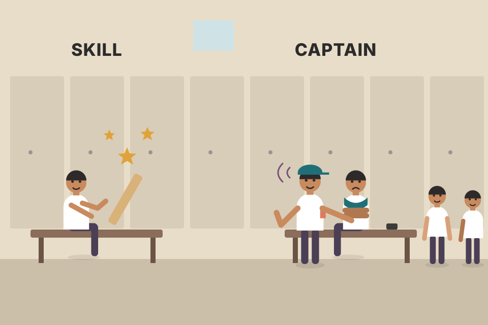
In a cricket team, the best batsman is not automatically the captain. The captain still has to be good enough to hold a place in the side, but what gets him the armband is reading the dressing room, handling the fast bowler who sulks after being taken off, and talking to the selectors. Technical skill gets you into the eleven; people skill decides who leads it.
Where it breaks: in cricket the captaincy is one role, given by selectors. In engineering, "people skill" shows up in every role (a well-written design doc, a calm incident call, a review comment that gets acted on) and is rewarded gradually, not in one appointment.
What's happening behind it
The book's logic: technical skill is necessary but common, so it is priced like a commodity. Skill with people multiplies the value of the technical skill, because your ideas only matter once others understand, accept and act on them.
Beyond the book: engineering career ladders at many companies make this explicit: above senior level, the criteria shift from "builds things well" toward "influence", "alignment across teams" and "mentoring". That is Carnegie's "ability to express ideas, assume leadership and arouse enthusiasm" in modern HR language.
At work
Two engineers propose the same caching fix. One posts a terse ticket. The other writes a half-page note on why it matters to the product team, gets the SRE lead's view before the meeting, and credits the person who spotted the latency spike. Same 15 percent; very different 85 percent. Guess whose fix ships this sprint.
Interview angle. Senior and staff interviews ask "Tell me about a time you influenced a decision without authority." They are testing exactly this passage. Have a story where your technical point was right and where you did the people work (listening, framing it for their goals, sharing credit) that got it adopted.
Adults wanted to learn about people, and nobody had written the book
pdf p14–15
University of Chicago + United Y.M.C.A. Schools$25,0002 yearsMeriden, Connecticut156 questions
The survey. The University of Chicago and the United Y.M.C.A. Schools wanted to know what adults actually want to study. The survey cost $25,000 and took two years. Its last stage ran in Meriden, Connecticut, picked as a typical American town: every adult there was interviewed and asked 156 questions, about their job, education, spare time, income, hobbies, ambitions, problems and which subjects they most wanted to study.
The result. Adults' first interest was health. Their second was people: how to understand and get along with them, how to make people like you, and how to win others round to your way of thinking. (Those three wishes are, in effect, the plan of this book: Parts One, Two and Three.)
The missing textbook. The survey committee decided to run exactly such a course in Meriden, and went looking for a practical textbook. They found none. They asked one of the world's leading experts in adult education whether he knew of one. His answer, in Carnegie's telling: he knew what those adults wanted, but the book they needed had never been written.
Carnegie agreed. He had been searching for years for a practical working handbook on human relations himself. Since none existed, he wrote one for his own courses: this one. He ends the passage, disarmingly, with "I hope you like it."
"The book they need has never been written."An adult-education authority to the Meriden committee, as Carnegie reports it (pdf p15)
Picture it
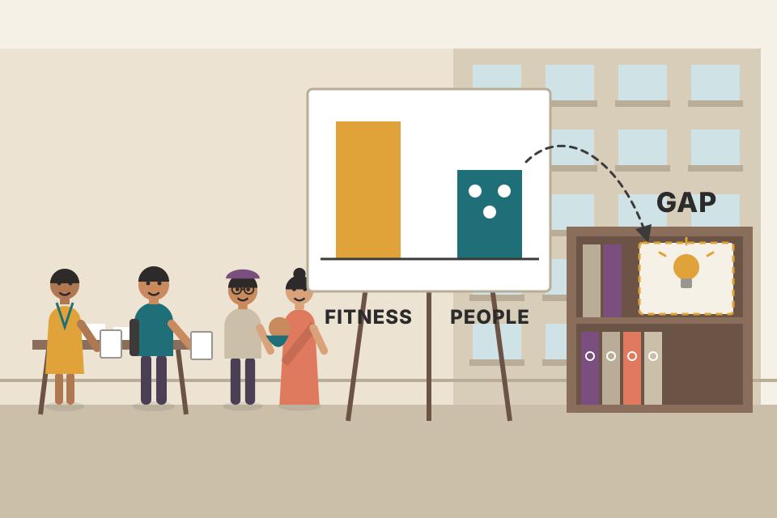
A startup in Pune interviews every user in one representative housing society (all of them, with a long questionnaire) about what they would pay to learn. Fitness comes first. Second, by a long way: "how to deal with my boss, my in-laws, my team". The founders look for a good existing app to partner with and find nothing practical, only theory. That gap is the product.
Where it breaks: a startup would ship within months. Carnegie had already been teaching the subject for years and still spent fifteen of them refining it before the book appeared.
What's happening behind it
From the book: Carnegie uses the survey as evidence of demand (people want this) and the missing textbook as evidence of a gap (nobody supplies it practically). Together they answer his opening question: why write another book.
Beyond the book: notice the three wishes the survey lists: understand people, be liked, persuade. They map almost exactly onto Part One (handling people), Part Two (six ways to make people like you) and Part Three (winning people to your way of thinking). Part Four, on leading and correcting, is the extra a manager needs.
At work
This is a good model for any internal tool or doc you propose: show the demand ("in the last survey, onboarding was the top complaint"), show the gap ("there is no single runbook, only scattered Slack threads"), then offer the thing. Carnegie's three-step pitch works in a design review.
Part Three, winning people to your way of thinking, begins at ch10.
05 · THE RESEARCH
Reading everything, a hired researcher, and interviews with the famous
pdf p15
Before writing anything, Carnegie tried to collect every practical idea anyone had ever used for winning friends and influencing people. He describes three sources.
1 · Everything in print
Newspaper columns, magazine articles, family-court records, the old philosophers and the new psychologists.
2 · A researcher, 18 months
He hired a trained researcher who spent a year and a half in libraries reading what he had missed: heavy psychology books, hundreds of magazine articles, countless biographies.
Biographies of leaders. They read the life stories of great leaders "from Julius Caesar to Thomas Edison", trying to see how each of them handled people. For Theodore Roosevelt alone they read over a hundred biographies. The aim: spare no time or money to find every practical idea used through the ages.
Interviews. Carnegie personally interviewed dozens of successful people, some world-famous, to learn their techniques with people:
Field
People he names
Who they were (for today's reader)
Inventors
Guglielmo Marconi, Thomas Edison
radio pioneer; light bulb, phonograph
Politics
Franklin D. Roosevelt, James Farley
US President 1933–45; his campaign manager, famous for remembering names (see ch06)
Business
Owen D. Young
head of General Electric, founder of RCA
Film
Clark Gable, Mary Pickford
Hollywood's biggest stars of the era
Exploration
Martin Johnson
explorer and wildlife film-maker in Africa and the South Seas
The right-hand column is ours (Beyond the book), added because many of these names are no longer household names, exactly the problem the preface describes.
Picture it
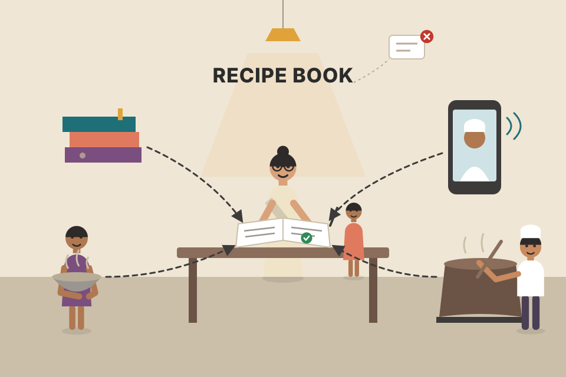
A grandmother putting together the family recipe book does not trust one cookbook. She reads the old ones, asks the neighbour whose biryani is famous across the colony, phones the cousin who ran a hotel kitchen, and watches how the wedding caterer does it at scale. Only what keeps showing up across all of them goes in the book.
Where it breaks: recipes can be checked by tasting. Biographies and interviews with the famous tell you what successful people said they did, which is not always what made them successful, so the next step (testing in class) matters more than the reading.
What's happening behind it
The book's method: cast the widest possible net (court records to celebrities), then look for techniques that recur across very different lives. A rule that worked for a President, an inventor and a film star is less likely to be a quirk of one personality.
Beyond the book: this is a literature review plus interviews, the first half of how a researcher would work. Its weak point is survivorship bias: studying only the famous and successful tells you what they had in common, not whether those habits caused the success. Carnegie's next step, testing the rules on ordinary adults, partly addresses that.
At work
Before writing your team's "how we do code review" guide, do the Carnegie research: read a few published guides, look at your own past review threads (your "family-court records"), and ask the two or three people whose reviews everyone likes what they actually do. Then test the draft before you call it policy.
From a postcard of rules to a book: fifteen years of testing on real adults
pdf p15–16
This is the passage that explains what kind of book it is. Carnegie turned his research into a talk, then turned his students into testers.
A short talk that grew. From all the material he made a short talk and called it "How to Win Friends and Influence People". It was short only at first; it grew into a lecture of an hour and a half, which he gave every season for years to adults in his New York courses.
The homework. After each talk he asked listeners to go out and try the ideas in their work and social life, then come back and tell the class what they did and what happened.
A new kind of laboratory. The students, eager to improve, loved the idea. Carnegie calls it the first and only laboratory of human relationships for adults that had ever existed.
The book grew like a child. It was not written in the usual way: it grew out of that laboratory and the experiences of thousands of adults. It started as a set of rules on a card no bigger than a postcard; the next season a bigger card; then a leaflet; then a series of booklets, each larger; and after fifteen years of experiment and research, this book.
His claim for the result. The rules are not theory or guesswork; he says they work like magic, and that he has seen them transform people's lives.
"It grew as a child grows."Carnegie on how the book came to be (pdf p16)
Step through: how the book was built
Picture it
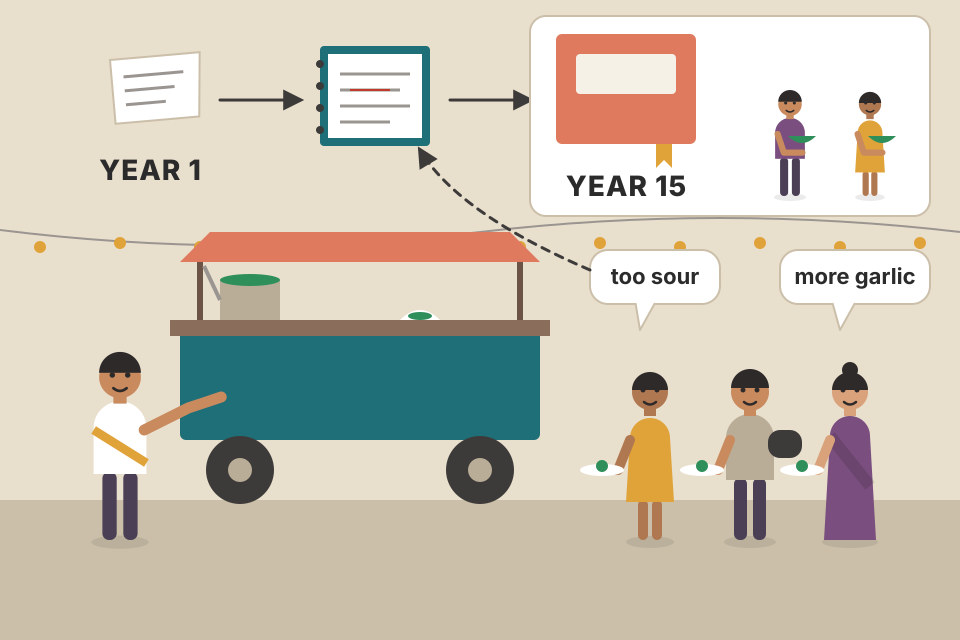
A street-food vendor's chutney recipe. Season one it is a few lines on a scrap of paper. Every evening regulars tell him what they think ("too sour", "more garlic"), and he adjusts. After a few years the scrap is a notebook; after fifteen it is a recipe the whole family can make the same way. Nobody designed it at a desk; customers co-wrote it.
Where it breaks: the vendor tastes the chutney himself. Carnegie mostly heard students' own reports of what happened, and people telling a class about their success are not neutral testers. The loop improved the rules, but it did not measure them.
What's happening behind it
The book's explanation: rules that survive years of real people trying them on real bosses, customers and spouses are more practical than rules from a library. That is why Carnegie keeps calling it a working handbook, not a theory.
Beyond the book: the class assignment also did something for the students. Reporting back to a group creates accountability (you said you would try it) and turns each success into a story others copy, which is why Carnegie courses still use the same report-back format. It is the same reason stand-ups and demo days work.
At work
This is iterative delivery: an MVP (the postcard), a feedback loop with real users (the class), and versions that grow only as fast as evidence supports them. If you are writing team guidelines, an onboarding doc or a review checklist, ship the postcard version, ask people to use it for a sprint, collect what happened, and grow it.
Interview angle. "Tell me about something you built iteratively." The Carnegie shape is a strong one: small first version, a deliberate feedback loop, what you changed because of the feedback, and what it became.
Connects to
Many chapters are built from these class reports: e.g. the hard-hat inspector in ch01 and the students in ch05 "Smile".
07 · WHAT STUDENTS REPORTED
314 enemies turned into friends, and other results from the classroom
pdf p16–18
To show the rules "work like magic", Carnegie lists results his students reported. Here they are, retold.
314 employeesjanitor uses his first name
The employer with 314 staff. His management style was years of non-stop fault-finding with no thanks or praise at all. The course changed it, and Carnegie reports a transformed workplace with real loyalty and team spirit: 314 enemies became 314 friends. The proof he offered his classmates was social: staff once avoided his eye when he toured the floor; now they greeted him, and even the janitor was on first-name terms with him. He gained more profit and more free time and, more important to Carnegie, much more happiness at work and at home.
Salespeople raised their sales sharply, and many won accounts they had chased without success before.
Executives got more authority and more pay. One reported a large raise.
The Philadelphia Gas Works executive. At sixty-five he was about to be demoted because he was combative and could not lead people well. The training not only saved him from the demotion but got him a promotion with a raise.
Families. At the banquet at the end of each course, spouses often told Carnegie their homes were much happier since their partner started the training.
Impatient students. Some were so excited by results that they phoned him at home on Sundays, unable to wait the 48 hours to the next class.
The art dealer who could not sleep. One man was so moved by a talk that he stayed up discussing it with classmates until 3 a.m. After they left he was so shaken by seeing his own mistakes, and so inspired, that he did not sleep that night, the next day, or the next night. He was no naive enthusiast: a sophisticated, world-weary art dealer, a man about town who spoke three languages and had degrees from two European universities.
The German aristocrat. While writing this chapter Carnegie got a letter, sent from an ocean liner, from an old-school German whose family had served for generations as army officers under the Hohenzollerns (Germany's former royal house). He wrote about using the principles with almost religious fervour.
The Harvard carpet manufacturer. A wealthy old New Yorker, Harvard graduate and owner of a large carpet factory said he had learned more about influencing people in fourteen weeks of this training than in four years of college. Carnegie invites you to call that absurd if you like; he is only reporting it. The man said it publicly to about 600 people at the Yale Club in New York, on the evening of Thursday, 23 February 1933.
"Three hundred and fourteen enemies have been turned into 314 friends."Carnegie on the employer's change (pdf p16)
Evidence check: how strong is each claim?
Carnegie says he reports these "without comment". As a careful reader, how would you rate each one? Pick, then read the note.
Rate all four to see a summary.
Picture it
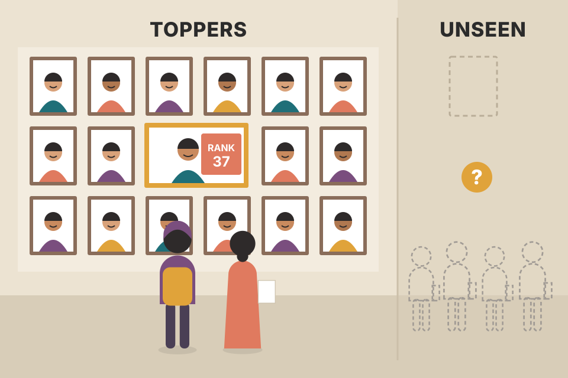
The wall of a coaching institute in Kota is covered with photos of toppers: "Rank 37, joined in Class 9!" Every story is real. But you never see the students who joined, worked hard and did not get in, and you cannot tell how many toppers would have done well anyway. The wall proves the method can work for some people, not how often.
Where it breaks: the coaching wall is advertising. Carnegie's stories are also teaching material: each one shows you what the person actually did, which you can try yourself and judge by your own result. That makes them more useful than a ranking, even if they are no stronger as proof.
What's happening behind it
The book's reasoning: the stories come from all kinds of people, including sceptical, highly educated ones (the art dealer, the Harvard graduate), so the effect cannot just be naive enthusiasm. And the before/after is visible to others: the janitor's greeting, the cancelled demotion.
Beyond the book: testimonials have known weaknesses. People who pay for a course and stand up in front of classmates are motivated to report success (selection and social desirability); failures rarely speak at the banquet (survivorship); and anyone who starts paying attention to how they treat people may improve whichever rules they follow (a Hawthorne-style effect). None of this makes the advice wrong. Much of it, such as appreciation over criticism, listening and using names, is supported by later research, but the front matter's stories are not that research.
At work
The 314-employee story is a manager's story. The fastest way a team lead loses a team is the one that employer used: constant fault-finding with no appreciation. A useful test: when you walk into the team channel or the office, do people bring you things (questions, early warnings, ideas) or go quiet? That is your version of "no one greeted me".
Interview angle. If you claim a soft-skill result in an interview ("morale improved"), back it with something observable, as the best of these stories do: attrition dropped, people started raising incidents earlier, the other team began inviting you to design reviews.
The janitor using his first name: names matter, in ch06.
08 · THE PURPOSE
"Only half awake": why this is an action book
pdf p18
Carnegie closes "How This Book Was Written" with three quotations that set out what the book is for.
William James, the Harvard psychologist: compared with what we could be, we are only half awake. We use a small part of our physical and mental resources and live well inside our limits, with powers of many kinds that we habitually fail to use.
Carnegie's purpose, stated once: the book's sole purpose is to help you discover, develop and profit from those unused abilities.
John G. Hibben, former president of Princeton: education is the ability to meet life's situations.
The test he sets himself. If, after the first three chapters, you are not at least a little better equipped to meet life's situations, he will count the book a total failure as far as you are concerned.
Herbert Spencer, the philosopher: the great aim of education is not knowledge but action.
"And this is an action book."Dale Carnegie, 1936 (pdf p18)
Picture it
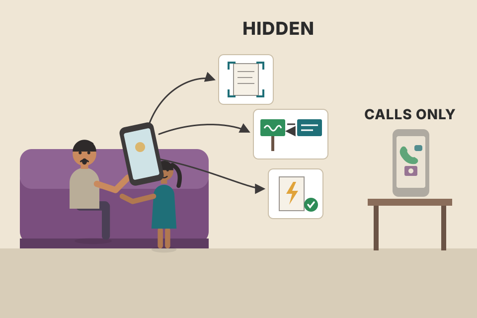
Most of us use a smartphone like a phone from 2010: calls, chat, photos. Somebody shows you that it can scan documents, translate a signboard in Tamil Nadu in real time and pay your electricity bill, and you realise the power was there the whole time, unused. James says people are like that, and Carnegie says the book is the friend who shows you the hidden features.
Where it breaks: a phone feature works the first time you tap it. A people skill only works after practice, often clumsily at first, which is exactly why Carnegie follows this passage with nine suggestions about practising.
What's happening behind it
The book's idea: knowing a principle and being able to use it under pressure are different things. The test of the book is a change in what you do in real situations, not what you can recite.
Beyond the book: learning scientists distinguish declarative knowledge (knowing that) from procedural knowledge (knowing how). People skills are mostly procedural, like typing or driving, and procedural skills are built by repetition with feedback, not by reading. That is the logic behind the nine suggestions.
At work
Engineers often treat soft-skill books as information: read, nod, forget. Carnegie's three-chapter test is a good one to borrow: after reading ch01–ch03, can you point to one review comment, one stand-up, or one 1:1 that went differently? If not, the reading did not count yet.
Connects to
Carnegie's three-chapter test covers Part One: ch01, ch02, ch03.
09 · NINE SUGGESTIONS · 1
Suggestion 1: the one requirement that matters more than any rule, a deep desire to learn
pdf p19
Carnegie puts the most important suggestion first and says it outweighs all the others. Without it, a thousand study rules will do little; with it, you can do wonders without reading any study tips at all.
The requirement: a deep, driving desire to learn, and a firm determination to get better at dealing with people.
How to grow that desire (his three steps):
Remind yourself constantly how much these principles matter to you.
Picture how mastering them will help you live a richer, fuller, happier and more fulfilling life.
Repeat to yourself, again and again, that your popularity, your happiness and your sense of your own worth depend to no small degree on how well you deal with people.
"A deep, driving desire to learn."Carnegie's one essential requirement (pdf p19)
Reflect, then reveal: find your reason
Carnegie's first step is a reason that is yours, not his. Name one relationship at work or at home that would make the next six months noticeably better if it went better, and what that would look like. Nothing is saved.
Picture it
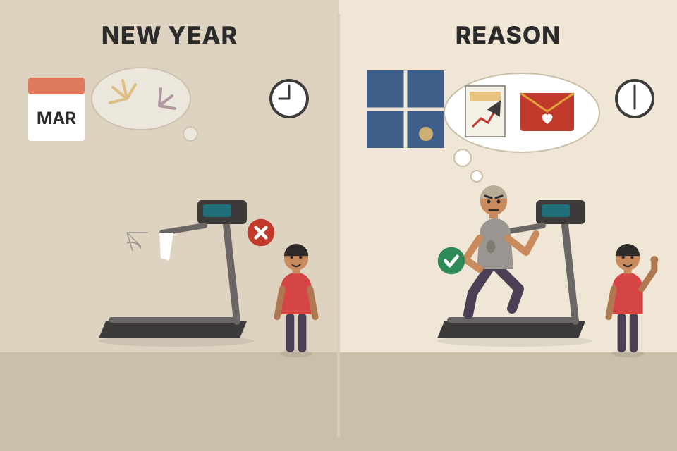
Two people join the same gym in January. One joined because it is the new year. The other's doctor has just told him his blood sugar is borderline and his daughter's wedding is in nine months. By March the first has stopped coming; the second is there at 6 a.m. Same gym, same trainer, same plan. The difference is the reason.
Where it breaks: a medical scare gives you a reason for free. With people skills, the cost of being clumsy is usually hidden (a promotion you did not get, a teammate who quietly stopped asking you for help), so you have to make the reason vivid yourself, which is exactly what Carnegie's "picture it, repeat it" steps are for.
What's happening behind it
The book's view: motivation is the engine and technique is the steering. Technique without motivation goes nowhere; motivation without technique still finds a way.
Beyond the book: research on goals suggests "picturing the rich life" alone can backfire: Gabriele Oettingen found that pure positive fantasising can lower effort. Her method, WOOP (Wish, Outcome, Obstacle, Plan), pairs the picture with the obstacle and an if-then plan ("If I feel the urge to correct someone in a meeting, then I'll ask a question instead"). It is a useful upgrade to Carnegie's step 2.
At work
Tie the desire to something concrete in your career: "I want to lead the platform team next year, and that depends on the other leads wanting to work with me", or "I want design reviews to go faster". A vague "be nicer" fades in a week; a reason with a name and a date lasts.
Interview angle. "What are you working on improving?" lands well when it sounds like this suggestion: a specific people skill, why it matters for your role, and how you are practising it.
Connects to
"Arouse in the other person an eager want" is the same idea pointed outward: ch03. Here you arouse it in yourself.
10 · NINE SUGGESTIONS · 2–4
Read each chapter twice, stop to think, and mark what you can use
pdf p19–20
2 · Read twice
Pass one is a quick skim for the overall shape. Resist moving straight on (fine for entertainment, not for building a skill): pass two is a slow, thorough reread. Carnegie argues this costs less time overall, because the ideas actually land.
3 · Stop and think
Pause often while reading and ask yourself exactly how and when you could apply each suggestion.
4 · Read with a pen
Keep a pencil, pen or highlighter in hand. Draw a line beside any suggestion you can use. For a "four-star" one, underline or highlight every sentence, or mark it "****". Marked books are more interesting and far quicker to review.
Dated wording. The book lists "a crayon, pencil, pen, magic marker or highlighter". On this site the equivalent is the highlight and notes feature: open the pages through the local notes server (python3 Notes/serve_notes.py) and select text to highlight it or attach a note. Your marks stay with the page for the monthly review in the next plate.
Worked example: one chapter, three ways to read it
Reading for information
Skim ch01 on the metro, think "makes sense, don't criticize", move on to ch02 the same evening. A week later you remember Lincoln was in it.
Reading the Carnegie way
Pass 1 (10 minutes): skim the whole page. Pass 2 (30 minutes): read slowly; at each plate ask "where would this have helped me this month?" (suggestion 3) and write the answer as a note. Mark one four-star idea, e.g. "ask about the cause before stating the rule". Only then open ch02.
Picture it
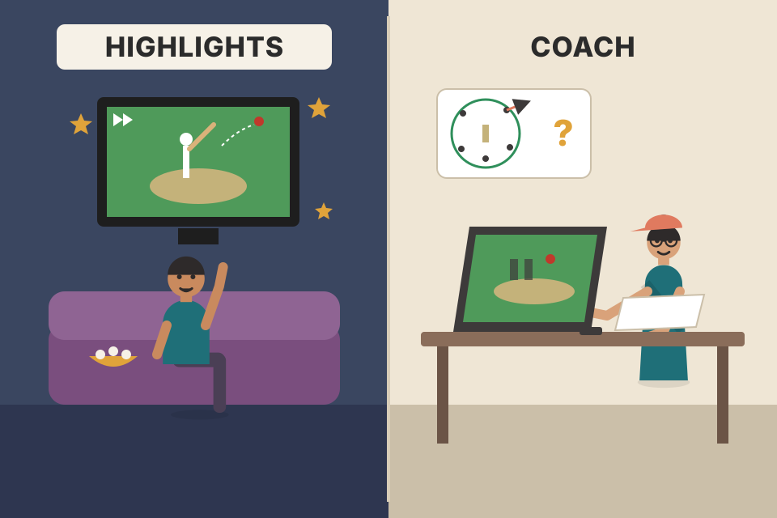
Watching a cricket highlights package versus studying a match as a coach would. The highlights give you the bird's-eye view: who won, the big moments. The coach rewatches the same overs, pauses at each delivery, asks "what would I set here?" and makes notes on the field placements worth stealing. Same match, completely different learning.
Where it breaks: a coach has the replay; most of us do not get to replay our conversations. That makes the "how and when could I use this?" pause while reading more important, because it is your only rehearsal before the real thing.
What's happening behind it
The book's reason: the first read tells you what is there; the second, slower read is where you actually take it in. Marking makes later review fast, and asking "when would I use this?" ties each idea to a real situation you will meet.
Beyond the book: learning research supports parts of this and warns about one. Asking how an idea applies to your own life (elaboration, and the "self-reference effect") reliably improves memory. Simply rereading and highlighting, though, are among the weaker study methods on their own (Dunlosky and colleagues, 2013), because they feel productive without forcing recall. So the most valuable of these three suggestions is number 3, the pause to plan.
At work
This is how good engineers read a design doc or an RFC: once fast for the shape, once slowly with comments. Do the same with this book: treat each chapter like a doc you are reviewing, and leave yourself a comment ("try this on Friday's planning meeting").
Connects to
The marks you make here are what suggestion 6 sends you back to when a real problem comes up (plate 12 below).
11 · NINE SUGGESTIONS · 5
Review the book every month, because we forget astonishingly fast
pdf p20
15 years as office managerread every contract, every month2 years writing his own book
The insurance office manager. Carnegie knew a woman who had managed the office of a large insurance company for fifteen years. Every month she read all the contracts the company had issued that month, many of them the same contracts she had read month after month for years. Why? Experience had taught her it was the only way to keep their terms clear in her head.
Carnegie himself. He spent almost two years writing a book on public speaking, and still had to go back to it every so often to remember what he had written in his own book. How fast we forget, he says, is astonishing.
The suggestion. Do not imagine one read will do. After reading it thoroughly, spend a few hours every month reviewing it. Keep it on your desk, in front of you, every day, and glance through it often. Keep reminding yourself how much room for improvement is still ahead. These principles become habits only through constant, vigorous review and application; there is no other way.
"The rapidity with which we forget is astonishing."Carnegie (pdf p20)
Modelled: what reviewing does to what you remember
A toy forgetting curve. The numbers are invented (modelled) to show the shape only: memory fades fast after a read, and each review both tops it up and makes it fade more slowly.
Picture it
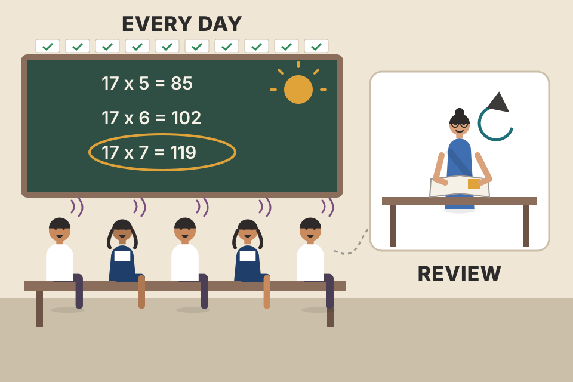
Learning a multiplication table as a child. You did not learn "seventeen sevens" by reading it once; you chanted it every morning in class until it came without thinking. Carnegie's monthly review is the adult version of that morning chant, and the office manager rereading contracts is a grown-up doing her tables.
Where it breaks: tables have one right answer you can drill. People skills have to be recalled in the moment, under emotion, in a slightly different situation each time, so review alone is not enough; it has to be paired with use (suggestion 6), which is why Carnegie says "review and application".
What's happening behind it
The book's explanation: forgetting is fast and normal, even for an expert in his own subject. Only repeated contact keeps knowledge available when you need it.
Beyond the book: Hermann Ebbinghaus measured this in the 1880s with nonsense syllables: most of what you learn fades within days unless revisited. Later work on the spacing effect and retrieval practice shows that spaced reviews where you try to recall before rereading (for example, answering the "Check yourself" questions on each page before opening them) are much stronger than rereading alone.
At work
You probably already do this for systems: the on-call runbook you reread before your rotation, the incident-response steps you drill in game days. Put a 30-minute recurring calendar slot on the first Monday of each month: open your highlights from these pages, pick one principle, and decide where you will use it that week.
Connects to
Each page's "Check yourself" section is built for this monthly review, starting with ch01's questions.
12 · NINE SUGGESTIONS · 6
Apply it at every chance, and use the book as a handbook when a real problem hits
pdf p20–21
Learning is doing. Carnegie quotes George Bernard Shaw's quip and agrees with it: learning is an active process, and we learn by doing. If you want to master these principles, do something with them; apply them whenever you can. Otherwise you will forget them quickly, because only knowledge that gets used sticks.
"If you teach a man anything, he will never learn."George Bernard Shaw, quoted by Carnegie (pdf p20)
It will be hard, and he admits it was hard for him. Even as the author, he often found it difficult to do everything he recommended. His examples of why:
You are forming habits, not collecting information. Carnegie goes further: you are trying out a new way of life, and that takes time, persistence and daily practice.
Use it as a working handbook. Come back to these pages often. When a specific problem comes up (his examples: handling a child, winning your spouse round to your view, or satisfying an irritated customer), distrust your first reflex; Carnegie thinks it usually leads you astray. Instead, open the book, reread the passages you marked, try the new way, and watch what happens.
Which chapter would you open?
Pick a page to open.
Picture it
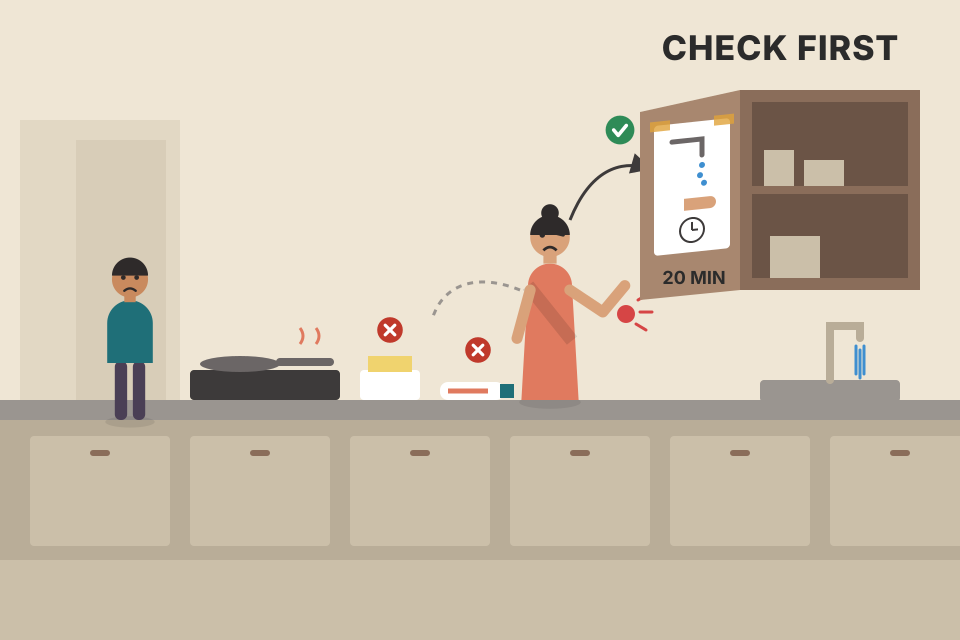
A first-aid card taped inside the kitchen cupboard. When someone burns a hand, the instinct is to rub butter or toothpaste on it; the card says cool running water for twenty minutes. You do not need to have memorised it, only to have the habit of checking the card before acting on instinct.
Where it breaks: a burn gives you a few seconds to look at the card. In a heated conversation there is often no time to open a book, so the handbook has to be read before the moment, or used to plan the next conversation (the follow-up 1:1, the reply you send tomorrow morning).
What's happening behind it
The book's explanation: the natural reaction (criticize, find fault, talk about yourself) is the default. A new habit needs a deliberate pause to override it, and the pause is easier if you know exactly where to look.
Beyond the book: habit research describes the same structure: a cue (the irritation), a routine (the impulsive reply) and a reward (the relief of saying it). You change a habit most reliably by keeping the cue and swapping in a new routine you have planned in advance, which is what "turn to the pages you underlined" does.
At work
The natural thing at work is usually fast: the sharp Slack reply, the "this is wrong" PR comment, escalating to the manager. The handbook habit is a short delay: draft, then glance at the principle that fits before you send. For high-stakes moments (a client escalation, a performance conversation), prepare by rereading the relevant page beforehand, the way you would read the runbook before a risky migration.
Worked example: the irritated customer, two ways
A client emails: "Your dashboard has been wrong for a week and nobody told us."
The natural thing
"The data is correct. The issue was a timezone setting on your side, which is in our docs."
Probably true, and it starts an argument.
After opening the handbook
"A week of wrong numbers is a real problem, and I'm sorry you found out this way. We traced it to a timezone setting; I can fix it on a call today and we'll add a warning so it can't happen silently again."
Lets them vent (ch15), sympathises (ch18), fixes the cause.
Make it a game: pay a small fine whenever someone catches you breaking a rule
pdf p21
The shortest suggestion: offer your spouse, your child or a colleague a dime or a dollar every time they catch you violating a particular principle. Make mastering the rules a lively game.
Dated wording. A dime (ten US cents) and a dollar in 1936 money. Today: ₹20 or ₹100 by UPI to whoever catches you, or a team "jar" that pays for the next round of chai.
Pick one principle at a time. Carnegie says "a certain principle", not all thirty at once.
Tell the people around you. The game only works if they know the rule and are allowed to call it.
Keep it light. The fine is small on purpose; the point is noticing, not punishment.
Worked example: a one-week team game
At Monday stand-up, a team lead says: "This week I'm working on not interrupting people. Anyone who catches me cutting someone off in a meeting gets ₹50 for the snack fund. Call it out on the spot." By Wednesday the fund has ₹300, the team is laughing about it, and the lead has noticed she interrupts mostly in design reviews, when she is excited. By Friday she has paid out only once that day.
Picture it
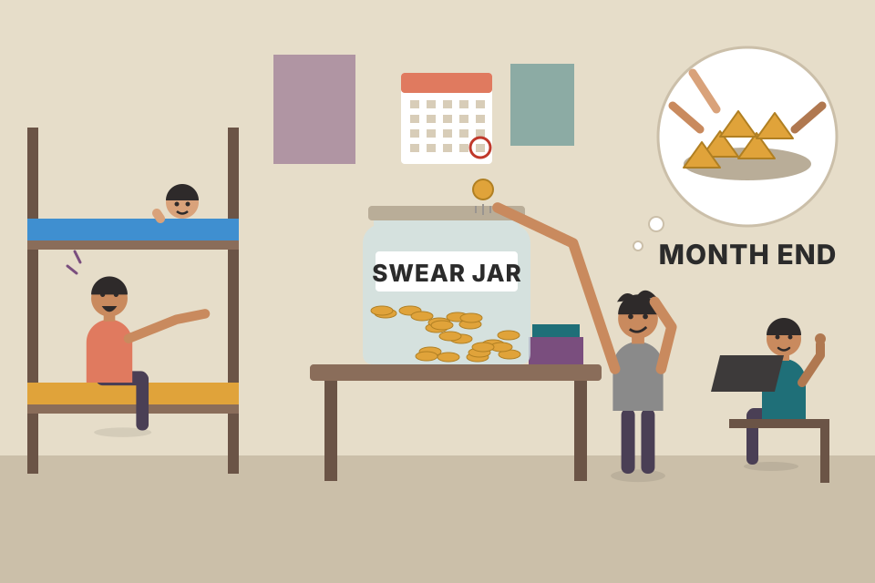
The "swear jar" in a college hostel room: every time someone swears, a coin goes in, and at the end of the month the jar buys samosas for everyone. Nobody resents it, everybody notices their own habit, and the habit fades faster than it would with lectures.
Where it breaks: swearing is easy to spot. Many of Carnegie's rules are harder for others to catch (did you really try to see their point of view?), so the game works best for visible habits like interrupting, complaining or forgetting names.
What's happening behind it
The book's logic: a game turns a lonely effort into a shared, fun one, and gives you outside eyes for habits you cannot see in yourself.
Beyond the book: three mechanisms help: public commitment (you said it out loud, so you want to be consistent), immediate feedback (you learn in the moment, not a week later) and a small, playful cost that makes the slip memorable without shame. Behavioural economists use the same idea in "commitment devices".
At work
Leads can model this safely: choosing a habit to work on in public makes it normal for the team to talk about behaviour, not just code. It also shows a growth mindset, which juniors copy. Choose something you genuinely want to fix, and let the team call it.
Interview angle. "How do you take feedback?" A concrete story of inviting feedback on a habit, with the result, is far stronger than "I'm open to feedback".
The Wall Street banker's Saturday-night review: three questions, every week, for years
pdf p21–22
president of an important Wall Street banklittle formal schoolingevery Saturday eveningengagement book
Who. The president of a major Wall Street bank described his self-improvement system to one of Carnegie's classes. He had little formal education but had become one of the most important financiers in America, and he credited most of his success to this home-made system. Carnegie retells it in the banker's words as closely as he can remember.
The system. Saturday evening was blocked for it; the whole family knew. Alone, with his appointment diary open, he replayed each meeting of the week against three questions:
Mistakes: where did I go wrong?
What worked: what went right, and how could it have gone better still?
Lessons: what do I carry forward?
What it felt like. The review often made him quite unhappy; he was frequently astonished at his own blunders. Over the years the blunders became rarer, and sometimes after a session he allowed himself a small pat on the back.
What it did. He said this self-analysis, kept up year after year, did more for him than anything else he had ever tried: it improved his decision-making and helped him enormously in all his dealings with people. He recommended it as highly as he could.
Carnegie's suggestion. Use a similar system to check how you are applying the principles in this book. He promises two results: you will be in an educational process that is both fascinating and priceless, and your ability to meet and deal with people will grow enormously.
"Did more for me than any other one thing I have ever attempted."The banker, as Carnegie recalls him (pdf p22)
Try it now: a 5-minute Saturday review
Open your calendar for the past week. Pick one meeting, 1:1 or conversation with someone, and answer the banker's three questions. Nothing is saved.
Picture it
A shopkeeper in an old Indian market closes his bahi-khata (the red ledger) every Saturday night, line by line: what sold, what did not, which customer he lost and why. Some weeks the totals make him wince. After years of it, he knows his trade better than any business school could teach him, because he has audited himself every single week.
Where it breaks: the ledger has numbers that cannot lie. A review of conversations depends on your honest memory of how you behaved, and memory flatters us, which is why the banker's first question is about mistakes, and why a calendar (his engagement book) helps: it shows what actually happened, not what you remember.
What's happening behind it
The book's view: regular, honest self-examination turns experience into learning. Mistakes you notice stop repeating; things you did well get repeated on purpose.
Beyond the book: this is structured reflection, and it has research behind it. In one study (Di Stefano, Gino, Pisano and Staats), call-centre trainees who spent 15 minutes at the end of each day writing about what they had learned performed noticeably better than those who spent the time practising more. The army's "after-action review" uses almost the banker's three questions: what was supposed to happen, what happened, and what we learn.
At work
You already know this ritual as the sprint retrospective and the blameless post-mortem: what went wrong, what went well, what we change. The banker ran a retro on himself every week. Try a personal one on Friday afternoons: 15 minutes with your calendar, three questions, one change for next week.
Interview angle. "How do you keep improving?" or "Tell me about a habit that made you better at your job." A weekly self-review with a specific lesson it produced is a concrete, credible answer.
Keep a record of your wins, and the nine suggestions as a checklist (a–i)
pdf p22–23
Suggestion 9. The original book had blank pages at the back for you to write down your successes in applying the principles. Be specific: names, dates, results. Keeping the record will push you to do more, and the entries will be fascinating to come across some evening years later.
Dated, and today's version. Instead of blank pages: a single notes file or a "people wins" doc, or the notes feature on these pages (served through python3 Notes/serve_notes.py). One line per entry is enough: date · person · principle · what I did · what happened.
Worked example: three record entries
12 Mar · Ravi (QA lead) · ch01 ask, don't condemn. Asked why regression runs were being skipped instead of quoting the release checklist. Turned out the suite takes 3 hours; we split it. Skips stopped.
15 Mar · client PM · ch15 let them talk. Let her finish the whole complaint before answering. She ended by saying "honestly it's not your team's fault". Call lasted 20 minutes instead of an hour.
19 Mar · my brother · ch02 sincere appreciation. Thanked him for sorting out Amma's phone. He offered to handle the internet bill too.
Names and situations invented for illustration.
The checklist. Carnegie closes the front matter by boiling the nine suggestions down into a list (a–i). In short:
To get the most out of this book (a–i, in short)
(a) Build a deep, driving desire to master the principles of human relations.
(b) Read each chapter twice before moving on.
(c) Stop often to ask how you can apply each suggestion.
(d) Underline each important idea.
(e) Review the book every month.
(f) Apply the principles at every chance; use the book as a working handbook for daily problems.
(g) Make learning a game: pay a friend a small sum each time they catch you breaking a principle.
(h) Check your progress every week: mistakes, improvements, lessons for the future.
(i) Keep notes on how and when you applied the principles.
Self-audit: which suggestions am I actually set up for?
Picture it
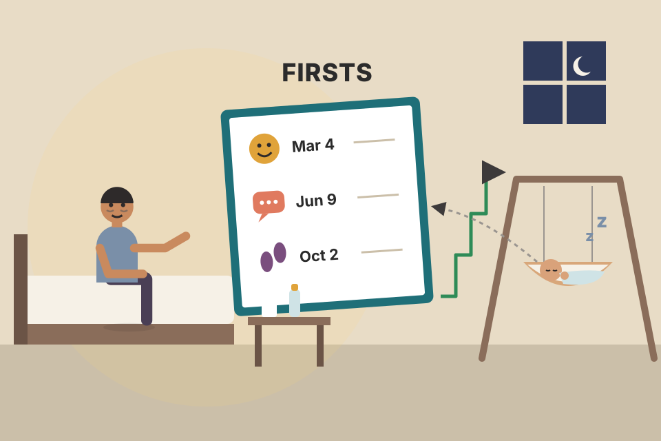
A new parent's notebook of a baby's firsts: first smile, first word, first steps, each with a date. On a tired night it reminds you that things are moving forward; years later it is priceless. Carnegie's record of "triumphs" is the same thing for your own growth with people.
Where it breaks: a baby's milestones happen whether or not you write them down. Your people-skill wins often happen only because you are tracking them: the record is part of the cause, not just a souvenir.
What's happening behind it
The book's reason: a written record inspires more effort and turns abstract progress into something you can see.
Beyond the book: Teresa Amabile's research on work diaries found that the single biggest booster of motivation at work is a sense of progress, even small progress, and that writing it down makes it visible (she called it the "progress principle"). The record also makes the monthly review (e) and the weekly check (h) easier, because you are rereading your own real cases, not just the book.
At work
Engineers often keep a brag document for appraisals: what I shipped, with impact. Add a "people" section using suggestion 9's format: names, dates, results. It feeds your next performance review and, conveniently, is exactly the raw material for behavioural interview stories (situation, action, result).
Each Part ends with an "In a Nutshell" list of its principles, useful for the monthly review: ch03, ch09, ch21, ch30.
16 · WRAP-UP
Summary and key terms
pdf p11–23
Preface (Dorothy Carnegie, 1981). The book began with a 5,000-copy printing in 1937 and became an all-time best-seller and a phrase in the language. Carnegie (died 1955) always revised his courses, so the 1981 edition made a few cuts and added newer examples, keeping his chatty voice and the content.
Why he wrote it. Teaching adults in New York since 1912, he found they needed people skills even more than speaking skills, and so did he. He cites research claiming about 15% of an engineer's financial success comes from technical knowledge and 85% from skill with people, his 1,500+ engineering students, and Rockefeller paying more for that ability than any other.
The demand and the gap. The $25,000, two-year Meriden survey (156 questions, every adult) found health was adults' first interest and people their second, and no practical textbook existed.
How it was made. Reading everything (court records to psychologists), a researcher for 18 months, 100+ biographies of Theodore Roosevelt, interviews with Edison, Marconi, FDR, Farley, Young, Gable, Pickford and Martin Johnson; then a talk that grew to 90 minutes, tested by students who reported back. Postcard → card → leaflet → booklets → book, over 15 years.
Claimed results. 314 employees turned from enemies into friends; sales and pay up; a 65-year-old Gas Works executive promoted instead of demoted; happier homes; an art dealer sleepless for two nights; a Harvard graduate saying 14 weeks taught him more than 4 years of college. Testimonials, reported "without comment".
Purpose. We are "only half awake" (James); education is meeting life's situations (Hibben) and action, not knowledge (Spencer). If the first three chapters don't help, count the book a failure. "This is an action book."
Nine suggestions. Desire; read twice; pause and plan; mark it; review monthly; apply it and use it as a handbook instead of the impulsive reaction; a fines game; a weekly review (the banker's three questions); a record of wins.
Term or phrase
Meaning on this page
Where
Revised edition
The 1981 update: a few cuts, newer examples, same content and voice.
pdf p11–12
Human engineering
Carnegie's term for personality and the ability to lead people.
pdf p14
15 / 85
The reported split of financial success: technical knowledge vs skill with people.
pdf p13–14
Meriden survey
Survey of what adults want to study: health first, people second.
pdf p14–15
Laboratory of human relationships
Carnegie's classes, where students tested rules in real life and reported back.
pdf p16
Postcard to book
The rules grew from a postcard-sized card to a book over 15 years.
pdf p16
Only half awake
William James: we use a small part of our powers.
pdf p18
Action book
The book's test is changed behaviour, not knowledge.
pdf p18
Four-star suggestion
One worth underlining fully or marking "****".
pdf p19
Working handbook
Reopen the marked pages when a real problem arrives, instead of acting on impulse.
pdf p21
Saturday-night review
The banker's weekly self-examination with three questions.
pdf p21–22
Checklist a–i
Carnegie's summary of the nine suggestions.
pdf p22–23
17 · USE IT
Practice this week
beyond the book
Set up the system before you start Part One. The exercises are ours; the ideas are Carnegie's nine suggestions.
Write your reason (suggestion 1). One sentence: which relationship, why it matters, by when. Put it at the top of your notes file. Worked if: you can say it from memory on Friday.
Read ch01 twice (2–4). One fast pass, one slow pass with at least three notes of the form "I could use this when…". Mark one four-star idea. Worked if: you have a specific situation written next to the idea.
Book the reviews (5, 8). Add two recurring calendar events: 15 minutes every Friday (the banker's three questions) and 30 minutes on the first Monday of each month (reread your highlights). Worked if: both exist and the first Friday one actually happened.
Start the game (7). Tell one person at work or at home which habit you are working on and the small fine for catching you. Worked if: someone catches you at least once (that means it is working).
Pause once (6). The next time you feel the impulse to fire off a reply, wait, reopen the relevant page, and then reply. Worked if: the reply was different from the one you first drafted.
Make the first entry (9). Date, person, principle, what you did, what happened. Worked if: it is specific enough that you will understand it in a year.
18 · LIMITS
Where it can go wrong
pdf p11–23 · plus beyond the book
The book's own caveats first.
It is hard, even for the author. Carnegie admits he often failed to apply his own rules, and that he had to reread his own speaking book to remember it.
It takes time. He calls it forming new habits, a new way of life, needing persistence and daily practice, not a quick trick.
The testimonials are reported "without comment". He invites you to call the Harvard graduate's claim absurd if you wish.
The text is dated. The preface itself admits names and examples had aged by 1981 and that only light changes were made.
The weekly review can hurt. The banker says it often made him unhappy at first.
Beyond the book: our critique
Strong claims, soft evidence. "Work like magic" and "15 / 85" are marketing-strength language. The 15/85 figure traces to an opinion survey, and the results are self-reported testimonials. Read the stories as examples to try, not proof.
Motivated by self-interest? The book links people skills to earnings, sales and promotion. Used only for that, the techniques can slide into manipulation, and people notice. Carnegie himself insists later that appreciation must be sincere (ch02).
Rereading and highlighting are weak on their own. Modern learning research favours recall (testing yourself) and spaced practice. Use the "Check yourself" questions, not just the highlighter.
The fines game needs consent and lightness. Fining yourself in front of juniors can be great modelling; making it about other people's behaviour, or turning it into a public scorecard, becomes the very criticism the book warns against.
Self-review can turn into self-criticism. The banker's first question is about mistakes; if that is all you ask, the review becomes rumination. Keep his second question, what went right, in every session.
Cultural fit. The book is American and 1930s. Some examples (spouses at banquets, Wall Street, dimes) need translating; the habits (review, practice, record) translate fine.
19 · TEST YOURSELF
Check yourself
pdf p11–23
Try to answer before opening each one. The first half is recall; the second half is application.
1. Who wrote the preface, when, and what did the revision change?
Dorothy Carnegie, Dale's widow, in 1981. It made a few cuts and added some more modern examples, because many famous names and phrases had become dated, but kept the content and Carnegie's breezy, conversational style (even the 1930s slang).
2. How big was the first printing, and why does the preface say the book lasted?
Only 5,000 copies in 1937, with nobody expecting more. It became an overnight sensation and kept selling for nearly fifty years because it met a lasting human need, not a post-Depression fad.
3. What made Carnegie move from teaching public speaking to writing this book?
From 1912 he taught speaking to working adults in New York, and saw that they needed help getting along with people even more than speaking help. He realised he needed it too. A survey showed the demand and nobody had a practical textbook, so he wrote one for his courses.
4. What is the 15 / 85 claim, and how much weight should it carry?
That about 15% of financial success, even in engineering, comes from technical knowledge and about 85% from "human engineering", personality and the ability to lead people. Carnegie credits research under the Carnegie Foundation, confirmed at the Carnegie Institute of Technology. Beyond the book: it seems to come from an opinion survey of engineers, so treat the direction seriously and the exact split with caution.
5. What did the Meriden survey find, and what happened when its committee looked for a textbook?
The University of Chicago and United Y.M.C.A. Schools' $25,000, two-year survey asked every adult in Meriden, Connecticut, 156 questions. Health was the top interest, people second. The committee found no practical textbook, and an adult-education expert told them the book they needed had never been written.
6. Describe how the book "grew as a child grows".
Research became a short talk, then a 90-minute lecture given each season. Students tried the ideas and reported back in class. The rules went from a postcard-sized card to a larger card, a leaflet, a series of booklets, and after 15 years of experiment, the book.
7. What happened to the employer with 314 employees and to the Philadelphia Gas Works executive?
The employer stopped constant criticism and condemnation; his staff became loyal and friendly (even the janitor used his first name), and he gained profit, leisure and happiness. The executive, about to be demoted at 65 for being belligerent and unable to lead, was instead promoted with a raise.
8. What test does Carnegie set his own book, and what does he mean by "an action book"?
If after the first three chapters you are not a little better equipped to meet life's situations, he will count the book a total failure for you. Following Spencer, the aim is action, not knowledge: changed behaviour is the only measure.
9. Which suggestion does Carnegie call more important than all the rules, and how do you build it?
Suggestion 1: a deep, driving desire to learn and improve with people. Build it by reminding yourself how much it matters, picturing the richer life mastery brings, and repeating that your popularity, happiness and sense of worth depend heavily on it.
10. What are the insurance office manager and Carnegie's speaking book evidence for?
For suggestion 5, monthly review: she reread every month's contracts for 15 years to keep their terms in mind, and he had to reread his own book to remember it. We forget astonishingly fast, so review is the only way to keep the principles habitual.
11. What were the Wall Street banker's three Saturday-night questions?
What mistakes did I make that time? What did I do right, and how could I have done better? What lessons can I learn from it? He reviewed every meeting in his engagement book each week, for years, and said it did more for him than anything else.
12. Application: a customer sends an angry email and your fingers are already typing a defence. Which suggestion applies, and what does it tell you to do?
Suggestion 6: hesitate before doing the natural, impulsive thing (usually wrong), reopen the passages you marked (for example on letting people talk, ch15, and sympathy, ch18), then reply the new way.
13. Application: how would you adapt suggestions 4, 7 and 9 to a modern engineering life?
4: highlight and annotate the study pages (or a doc). 7: tell a colleague which habit you are working on and pay a small UPI fine or snack-fund contribution when caught. 9: keep a "people wins" section in your brag doc with date, person, principle, action and result.
14. Interview: "How do you keep improving as an engineer and a lead?" How can this chapter shape your answer?
Describe a system, not a trait: a weekly self-review with the banker's three questions (like a personal retro), a specific skill you chose to work on and how you got feedback on it (the game), and a concrete result you recorded. That shows reflection, follow-through and evidence.
20 · SOURCES
References
pdf p11–23
Book pages and other sources used on this page
Dale Carnegie, How to Win Friends and Influence People, revised edition (1981; Simon & Schuster 2009 printing), front matter, pdf p11–23: Preface to the revised edition by Dorothy Carnegie, pdf p11–12; "How This Book Was Written—and Why" (1936), pdf p13–18 (publishing odds and courses since 1912 p13; 15/85, engineers, Rockefeller p13–14; Meriden survey p14–15; research and interviews p15; the laboratory and the postcard p15–16; student results p16–18; James, Hibben, Spencer p18); "Nine Suggestions on How to Get the Most Out of This Book", pdf p19–23 (suggestions 1–4 p19–20; 5–6 p20–21; 7–8 p21–22; 9 and checklist a–i p22–23).
Beyond the book (named where used): C. R. Mann, A Study of Engineering Education (Carnegie Foundation for the Advancement of Teaching, 1918), commonly cited as the source of the 15/85 figure; H. Ebbinghaus, Memory (1885) and later work on the spacing effect and retrieval practice; J. Dunlosky et al., "Improving students' learning with effective learning techniques" (2013); G. Oettingen, Rethinking Positive Thinking (WOOP); G. Di Stefano, F. Gino, G. Pisano, B. Staats, "Making experience count: the role of reflection in individual learning" (Harvard Business School working paper, 2014); T. Amabile and S. Kramer, The Progress Principle (2011); the US Army after-action review; Google, Site Reliability Engineering, chapter on post-mortem culture.